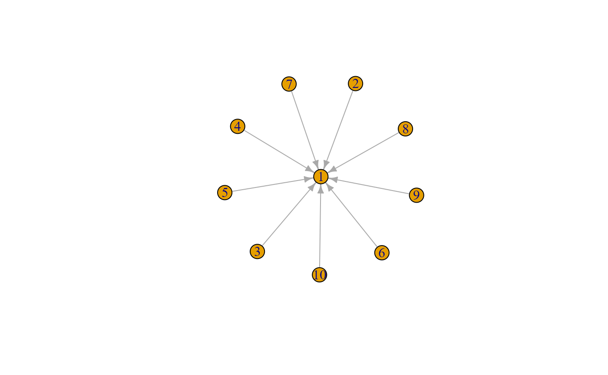
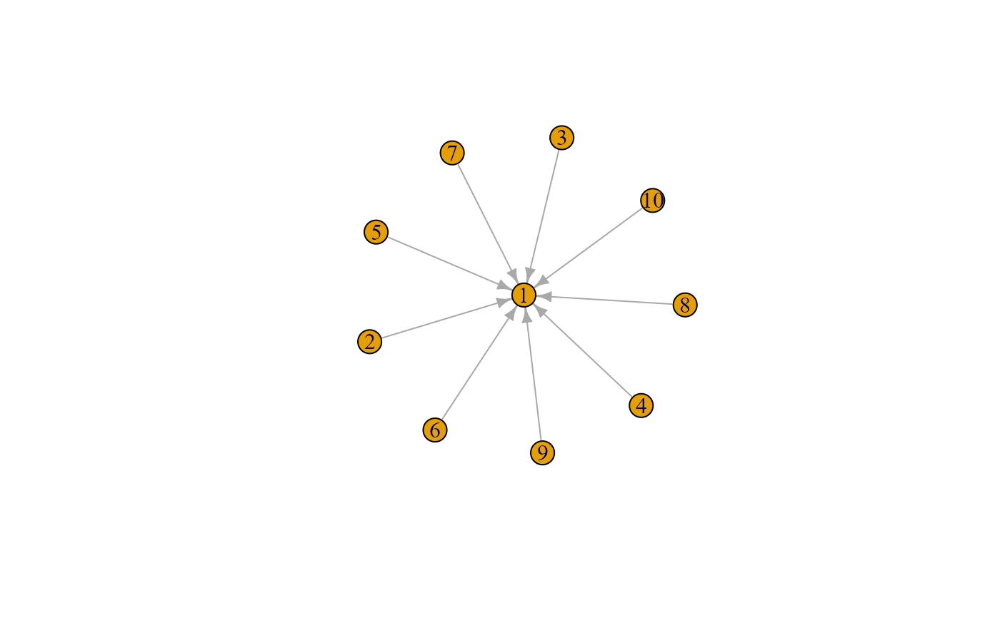

Vertex level indices
v_degree(
x,
vids = NULL,
mode = c("all", "out", "in"),
loops = FALSE,
rescaled = FALSE
)
v_eccentricity(x, vids = NULL, mode = c("all", "out", "in"), rescaled = FALSE)
v_betweenness(x, vids = NULL, directed = TRUE, rescaled = FALSE)
v_stress(x, vids = NULL, directed = TRUE, rescaled = FALSE)
v_eigenvector(x, directed = TRUE, rescaled = FALSE)
v_closeness(x, vids = NULL, mode = c("all", "out", "in"), rescaled = FALSE)
v_harmonic(x, vids = NULL, mode = c("all", "out", "in"), rescaled = FALSE)
v_pagerank(x, vids = NULL, damping = 0.85, directed = TRUE, rescaled = FALSE)
v_geokpath(
x,
vids = NULL,
mode = c("all", "out", "in"),
k = 3,
rescaled = FALSE
)
v_shapley(x, add.vertex.names = FALSE, vids = NULL, rescaled = FALSE)graph object
The vertices for the measure is to be calculated. By default, all vertices are included.
Character constant, gives whether the shortest paths to or from
the given vertices should be calculated for directed graphs.
If out then the shortest paths from the vertex, if in then to
it will be considered. If all, the default, then the corresponding
undirected graph will be used, edge directions will be ignored.
This argument is ignored for undirected graphs.
Logical; whether the loop edges are also counted.
This rarely makes sense. Default is FALSE.
if TRUE, the scores are rescaled so they sum to 1.
Logical, whether the graph should be considered directed (if it is directed to begin with)
The damping factor (‘d’ in the original paper).
The k parameter. The default is 3.
logical, should the output contain vertex names.
This requires a vertex attribute name to be present in the graph.
It is ignored if the attributed is missing.
Calculate several vertex level indices.
v_degree(): Degree of a vertex. Weights are discarded.
Degree of a vertex is defined as the number of edges adjacent to it.
v_eccentricity(): Eccentricity of a vertex. Weights are discarded.
The heavy lifting is done using eccentricity.
The eccentricity of a vertex is its shortest path distance from the farthest other node in the graph. It is calculated by measuring the shortest distance from (or to) the vertex, to (or from) all vertices in the graph, and taking the maximum.
This implementation ignores vertex pairs that are in different components. Isolate vertices have eccentricity zero.
v_betweenness(): Betweenness of a vertex. Weights are discarded. The
corresponding dedicated functions inside the igraph and sna
have some additional functions (including diverging ways of taking weight
into account). The settings of v_betweenness are what you want in
most cases and works similarly for both igraph and network
graph objects.
The betweenness of vertex \(v\) considers the number of shortest paths between all pairs of vertices (except paths to or from \(v\). For each vertex pair, we calculate the proportion of shortest paths between vertices \(i\) and \(j\) that pass through \(v\). The sum of these proportions is then equal to \(v\)'s betweenness. Mathematically, the betweenness of vertex \(v\) is given by $$C_B(v) = \sum_{i,j : i \neq j, i \neq v, j \neq v} \frac{g_{ivj}}{g_{ij}}$$ where \(g_{ijk}\) is the number of geodesics from \(i\) to \(k\) through \(j\).
In simple words, the betweenness of vertex \(v\) is the answer to: for each dyad that does not include \(v\), add up the proportions of shortest paths that run through \(v\).
Conceptually, high-betweenness vertices lie on a large proportion of shortest paths between other vertices; they can thus be thought of as “bridges” or “boundary spanners” and have been argued to be in an informationally-favorable position having disproportionately fast access to information and rumors, under the assumption that these will be more likely to flow through the shortest paths in the graph (or flow randomly).
It is important to consider whether it is assumed that flow through the network
occurs along the directions of the edges (directed == TRUE) or whether
edge direction does not matter (directed == FALSE)–the latter is
always the case when the graph is undirected itself.
v_stress(): Stress centrality of a vertex. Weights are discarded.
The stress centrality of vertex \(v\) is the number of shortest paths between all pairs of vertices (except paths to or from \(v\) that pass through \(v\). Mathematically, the stress centrality of vertex \(v\) is given by $$C_S(v) = \sum_{i,j : i \neq j, i \neq v, j \neq v} g_{ivj}$$ where \(g_{ivk}\) is the number of geodesics from \(i\) to \(k\) through \(v\).
Conceptually, high-stress vertices lie on a large number of shortest paths between other vertices; they can thus be thought of as “bridges” or “boundary spanners” and may experience high cognitive stress (in case of information networks) or physical stress (in case of physical flow networks).
It is important to consider whether it is assumed that flow through the network
occurs along the directions of the edges (directed == TRUE) or whether
edge direction does not matter (directed == FALSE)–the latter is
always the case when the graph is undirected itself.
v_eigenvector(): Eigenvector centrality of a vertex. Weights are discarded.
Eigenvector centrality scores correspond to the values of the first eigenvector of the graph adjacency matrix; these scores may, in turn, be interpreted as arising from a reciprocal process in which the centrality of each actor is proportional to the sum of the centralities of those actors to whom he or she i s connected. In general, vertices with high eigenvector centralities are those which are connected to many other vertices which are, in turn, connected to many others (and so on).
Eigenvector centrality is generalized by the Bonacich power centrality measure;
see power_centrality and bonpow
for more details on this generalization.
v_closeness(): Closeness of a vertex. Weights are discarded.
The closeness centrality of a vertex \(v\) is calculated as the inverse of
the sum of distances to all the other vertices in the graph. In other words,
for a vertex \(v\), determine the lengths of the shortest paths from v
to all other vertices (in caae of "out"), add those. This measures the
"farness" of \(v\). The closeness of \(v\) is the inverse of this sum.
The higher the number, the shorter the number of steps to reach all other
vertices.
Closeness centrality is meaningful only for connected graphs. In disconnected graphs, consider using the harmonic centrality with v_harmonic.
This function's work is performed by closeness. An
alternative implementation is closeness. The latter yields
values that are g-1 times larger (where g is the number of vertices) and takes
some alternative decisions in special cases (e.g., for unconnected vertices).
v_harmonic(): Harmonic centrality of a vertex. Weights are discarded.
The harmonic centrality of a vertex is the mean inverse distance to all other vertices. The inverse distance to an unreachable vertex is considered to be zero.
The measure is closely related to closeness. While closeness
centrality is meaningful only for connected graphs, harmonic centrality can
be calculated also for disconnected graphs and provides a useful alternative
in those cases.
v_pagerank(): Google Pagerank centrality of a vertex. Weights are discarded.
For the explanation of the PageRank algorithm, see the following webpage: The Anatomy of a Large-Scale Hypertextual Web Search Engine, or the following reference:
Sergey Brin and Larry Page: The Anatomy of a Large-Scale Hypertextual Web Search Engine. Proceedings of the 7th World-Wide Web Conference, Brisbane, Australia, April 1998.
The PageRank of a given vertex depends on the PageRank of all other vertices, so even if you want to calculate the PageRank for only some of the vertices, all of them must be calculated first. Requesting the PageRank for only some of the vertices therefore does not result in any performance increase.
For all vertices together, page rank always adds up to 1, so rescaled
does not have an effect. The rescaled argument is potentially useful
if vids is specified to consider only the values of a selected set
of vertices (whose pagerank then usually does not add up to 1).
v_geokpath(): Geodesic k-path centrality. Weights are discarded.
Geodesic K-path centrality for vertex \(v\) counts the number of vertices that can be reached by vertex \(v\) through a geodesic path of length less than "k".
If weights are potentially required, use our alternative implementation
at v_geokpath_w.
When vids is specified, the measure is calculated on the induced
subgraph consisting of only these vertices (and their corresponding) edges.
v_shapley(): Shapley Centrality
This function computes the centrality of vertices in a graph based on their Shapley value, following the approach from the Michalak et al. (2013) paper.
Michalak, T.P., Aadithya, K.V., Szczepanski, P.L., Ravindran, B. and Jennings, N.R., 2013. Efficient computation of the Shapley value for game-theoretic network centrality. Journal of Artificial Intelligence Research, 46, pp.607-650.
The code for the Shapley centrality is adapted from CINNA::group_centrality
and gives the same result (but our version is slightly more robust).
For igraph objects: eccentricity,
degree, betweenness,
eigen_centrality.
For network objects: degree, .
betweenness, stresscent,
evcent.
g <- igraph::make_star(10, mode = "undirected")
v_eccentricity(g)
#> [1] 1 2 2 2 2 2 2 2 2 2
v_eccentricity(g, vids = c(1,3,5))
#> [1] 1 2 2
g_n <- snafun::to_network(g)
v_eccentricity(g_n)
#> 1 2 3 4 5 6 7 8 9 10
#> 1 2 2 2 2 2 2 2 2 2
i_bus <- florentine$flobusiness
v_eccentricity(i_bus, vids = c(1, 5, 9))
#> Acciaiuoli Castellani Medici
#> 0 3 4
v_eccentricity(i_bus, vids = c("Medici", "Peruzzi"))
#> Medici Peruzzi
#> 4 3
n_bus <- to_network(i_bus)
v_eccentricity(n_bus, vids = c(1, 5, 9))
#> Acciaiuoli Castellani Medici
#> 0 3 4
v_eccentricity(n_bus, vids = c("Medici", "Peruzzi"))
#> Medici Peruzzi
#> 4 3
#
# v_degree
g_i <- snafun::create_random_graph(10, strategy = "gnm", m = 12,
directed = TRUE, graph = "igraph")
g2_i <- snafun::add_edge_attributes(g_i, attr_name = "weight", value = 1:12)
v_degree(g_i)
#> [1] 3 4 4 2 3 1 0 4 1 2
v_degree(g_i, rescaled = TRUE)
#> [1] 0.12500000 0.16666667 0.16666667 0.08333333 0.12500000 0.04166667
#> [7] 0.00000000 0.16666667 0.04166667 0.08333333
v_degree(g_i, mode = "in")
#> [1] 2 2 2 1 1 1 0 3 0 0
v_degree(g_i, mode = "in", rescaled = TRUE)
#> [1] 0.16666667 0.16666667 0.16666667 0.08333333 0.08333333 0.08333333
#> [7] 0.00000000 0.25000000 0.00000000 0.00000000
v_degree(g_i, mode = "out")
#> [1] 1 2 2 1 2 0 0 1 1 2
v_degree(g_i, mode = "out", rescaled = TRUE)
#> [1] 0.08333333 0.16666667 0.16666667 0.08333333 0.16666667 0.00000000
#> [7] 0.00000000 0.08333333 0.08333333 0.16666667
v_degree(g2_i) # weight is ignored
#> [1] 3 4 4 2 3 1 0 4 1 2
g_n <- snafun::create_random_graph(10, strategy = "gnm", m = 12,
directed = TRUE, graph = "network")
g2_n <- snafun::add_edge_attributes(g_n, attr_name = "weight", value = 1:12)
v_degree(g_n)
#> [1] 5 4 1 2 2 1 3 2 2 2
v_degree(g_n, rescaled = TRUE)
#> [1] 0.20833333 0.16666667 0.04166667 0.08333333 0.08333333 0.04166667
#> [7] 0.12500000 0.08333333 0.08333333 0.08333333
v_degree(g_n, mode = "in")
#> [1] 2 2 1 1 2 0 1 1 1 1
v_degree(g_n, mode = "in", rescaled = TRUE)
#> [1] 0.16666667 0.16666667 0.08333333 0.08333333 0.16666667 0.00000000
#> [7] 0.08333333 0.08333333 0.08333333 0.08333333
v_degree(g_n, mode = "out")
#> [1] 3 2 0 1 0 1 2 1 1 1
v_degree(g_n, mode = "out", rescaled = TRUE)
#> [1] 0.25000000 0.16666667 0.00000000 0.08333333 0.00000000 0.08333333
#> [7] 0.16666667 0.08333333 0.08333333 0.08333333
v_degree(g2_n) # weight is ignored
#> [1] 5 4 1 2 2 1 3 2 2 2
#
# v_betweenness
g_i <- snafun::create_random_graph(10, strategy = "gnm", m = 12,
directed = TRUE, graph = "igraph")
g2_i <- snafun::add_edge_attributes(g_i, attr_name = "weight", value = 1:12)
v_betweenness(g_i)
#> [1] 0 0 0 0 0 0 2 0 1 5
v_betweenness(g_i, rescaled = TRUE)
#> [1] 0.000 0.000 0.000 0.000 0.000 0.000 0.250 0.000 0.125 0.625
v_betweenness(g_i, vids = c(1, 2, 3, 5), rescaled = TRUE)
#> [1] NaN NaN NaN NaN
v_betweenness(g2_i) # attribute "weight" is not used
#> [1] 0 0 0 0 0 0 2 0 1 5
g_n <- snafun::to_network(g_i)
v_betweenness(g_n)
#> [1] 0 0 0 0 0 0 2 0 1 5
v_betweenness(g_n, rescaled = TRUE)
#> [1] 0.000 0.000 0.000 0.000 0.000 0.000 0.250 0.000 0.125 0.625
v_betweenness(g_n, vids = c(1, 2, 3, 5), rescaled = TRUE)
#> [1] NaN NaN NaN NaN
# star network
g <- igraph::make_star(10, "in")
plot(g)

v_betweenness(g) # there are no shortest paths with length >= 3
#> [1] 0 0 0 0 0 0 0 0 0 0
v_betweenness(g, directed = FALSE) # all 36 shortest paths that do not include "1" go through "1"
#> [1] 36 0 0 0 0 0 0 0 0 0
#
# v_stress
g_i <- snafun::create_random_graph(10, strategy = "gnm", m = 12,
directed = TRUE, graph = "igraph")
v_stress(g_i)
#> [1] 0 11 0 0 3 22 6 12 9 20
v_stress(g_i, rescaled = TRUE)
#> [1] 0.00000000 0.13253012 0.00000000 0.00000000 0.03614458 0.26506024
#> [7] 0.07228916 0.14457831 0.10843373 0.24096386
v_stress(g_i, vids = c(1, 2, 3, 5), rescaled = TRUE)
#> [1] 0.0000000 0.7857143 0.0000000 0.2142857
g_n <- snafun::to_network(g_i)
v_stress(g_n)
#> [1] 0 11 0 0 3 22 6 12 9 20
v_stress(g_n, rescaled = TRUE)
#> [1] 0.00000000 0.13253012 0.00000000 0.00000000 0.03614458 0.26506024
#> [7] 0.07228916 0.14457831 0.10843373 0.24096386
v_stress(g_n, vids = c(1, 2, 3, 5), rescaled = TRUE)
#> [1] 0.0000000 0.7857143 0.0000000 0.2142857
# star network
g <- igraph::make_star(10, "in")
plot(g)

v_stress(g) # there are no shortest paths with length >= 3
#> [1] 0 0 0 0 0 0 0 0 0 0
v_stress(g, directed = FALSE) # all 36 shortest paths that do not include "1" go through "1"
#> [1] 36 0 0 0 0 0 0 0 0 0
#
# v_eigenvector
g_i <- snafun::create_random_graph(10, strategy = "gnm", m = 12,
directed = TRUE, graph = "igraph")
v_eigenvector(g_i)
#> [1] 0.000000e+00 0.000000e+00 1.387779e-16 0.000000e+00 7.071068e-01
#> [6] 1.387779e-16 1.387779e-16 0.000000e+00 7.071068e-01 1.387779e-16
v_eigenvector(g_i, rescaled = TRUE)
#> [1] 5.102800e-16 2.747662e-16 0.000000e+00 2.355139e-16 5.000000e-01
#> [6] 0.000000e+00 0.000000e+00 5.887847e-16 5.000000e-01 0.000000e+00
v_eigenvector(g_i, directed = FALSE)
#> [1] 1.517237e-01 4.752443e-01 8.461109e-17 1.894230e-01 5.291537e-01
#> [6] 1.963244e-01 2.121977e-01 2.144010e-01 4.005463e-01 3.811322e-01
g_n <- snafun::to_network(g_i)
v_eigenvector(g_n)
#> 1 2 3 4 5 6
#> 0.000000e+00 0.000000e+00 1.387779e-16 5.551115e-17 7.071068e-01 1.387779e-16
#> 7 8 9 10
#> 1.387779e-16 0.000000e+00 7.071068e-01 1.387779e-16
v_eigenvector(g_n, rescaled = TRUE)
#> 1 2 3 4 5 6
#> 7.850462e-17 3.140185e-16 2.158877e-16 3.140185e-16 5.000000e-01 2.158877e-16
#> 7 8 9 10
#> 2.158877e-16 3.532708e-16 5.000000e-01 2.158877e-16
v_eigenvector(g_n, directed = FALSE)
#> 1 2 3 4 5 6
#> 1.517237e-01 4.752443e-01 6.319943e-17 1.894230e-01 5.291537e-01 1.963244e-01
#> 7 8 9 10
#> 2.121977e-01 2.144010e-01 4.005463e-01 3.811322e-01
# star network
g <- igraph::make_star(10, "in")
if (FALSE) { # \dontrun{
v_eigenvector(g) # all 0 + a warning is issued
} # }
v_eigenvector(g, directed = FALSE)
#> [1] 0.7071068 0.2357023 0.2357023 0.2357023 0.2357023 0.2357023 0.2357023
#> [8] 0.2357023 0.2357023 0.2357023
#
# v_closeness
g_i <- snafun::create_random_graph(10, strategy = "gnm", m = 12,
directed = TRUE, graph = "igraph")
g2_i <- snafun::add_edge_attributes(g_i, attr_name = "weight", value = 1:12)
v_closeness(g_i)
#> [1] 0.05263158 0.06250000 0.06250000 0.03333333 0.04545455 0.04545455
#> [7] 0.05263158 0.05263158 0.03703704 0.06250000
1/rowSums(igraph::distances(g_i)) # same thing
#> [1] 0.05263158 0.06250000 0.06250000 0.03333333 0.04545455 0.04545455
#> [7] 0.05263158 0.05263158 0.03703704 0.06250000
v_closeness(g_i, rescaled = TRUE)
#> [1] 0.10387657 0.12335343 0.12335343 0.06578850 0.08971159 0.08971159
#> [7] 0.10387657 0.10387657 0.07309833 0.12335343
v_closeness(g_i, vids = c(1, 2, 3, 5), rescaled = TRUE)
#> [1] 0.2359249 0.2801609 0.2801609 0.2037534
v_closeness(g2_i) # attribute "weight" is not used
#> [1] 0.05263158 0.06250000 0.06250000 0.03333333 0.04545455 0.04545455
#> [7] 0.05263158 0.05263158 0.03703704 0.06250000
g_n <- snafun::to_network(g_i)
v_closeness(g_n)
#> 1 2 3 4 5 6 7
#> 0.05263158 0.06250000 0.06250000 0.03333333 0.04545455 0.04545455 0.05263158
#> 8 9 10
#> 0.05263158 0.03703704 0.06250000
v_closeness(g_n, rescaled = TRUE)
#> 1 2 3 4 5 6 7
#> 0.10387657 0.12335343 0.12335343 0.06578850 0.08971159 0.08971159 0.10387657
#> 8 9 10
#> 0.10387657 0.07309833 0.12335343
v_closeness(g_n, vids = c(1, 2, 3, 5), rescaled = TRUE)
#> 1 2 3 5
#> 0.2359249 0.2801609 0.2801609 0.2037534
# star network
g <- igraph::make_star(10, "in")
v_closeness(g) # "1" has the highest closeness, the rest has the same value
#> [1] 0.11111111 0.05882353 0.05882353 0.05882353 0.05882353 0.05882353
#> [7] 0.05882353 0.05882353 0.05882353 0.05882353
v_closeness(g, mode= "in") # only "1"
#> [1] 0.1111111 NaN NaN NaN NaN NaN NaN
#> [8] NaN NaN NaN
v_closeness(g, mode= "out") # all except "1"
#> [1] NaN 1 1 1 1 1 1 1 1 1
#
# v_harmonic
g_i <- snafun::create_random_graph(10, strategy = "gnm", m = 12,
directed = TRUE, graph = "igraph")
v_harmonic(g_i)
#> [1] 4.833333 3.250000 4.333333 0.000000 4.833333 5.500000 5.333333 3.416667
#> [9] 0.000000 5.333333
v_closeness(g_i) # harmonic works for disconnected graphs, closeness does not
#> [1] 0.08333333 0.05555556 0.07692308 NaN 0.08333333 0.10000000
#> [7] 0.09090909 0.05882353 NaN 0.09090909
cor(v_harmonic(g_i), v_closeness(g_i), use = "complete.obs") # usually very high
#> [1] 0.9914377
v_harmonic(g_i, rescaled = TRUE)
#> [1] 0.13122172 0.08823529 0.11764706 0.00000000 0.13122172 0.14932127
#> [7] 0.14479638 0.09276018 0.00000000 0.14479638
v_harmonic(g_i, vids = c(1, 2, 3, 5), rescaled = TRUE)
#> [1] 0.2801932 0.1884058 0.2512077 0.2801932
g_n <- snafun::to_network(g_i)
v_harmonic(g_n)
#> 1 2 3 4 5 6 7 8
#> 4.833333 3.250000 4.333333 0.000000 4.833333 5.500000 5.333333 3.416667
#> 9 10
#> 0.000000 5.333333
v_harmonic(g_n, rescaled = TRUE)
#> 1 2 3 4 5 6 7
#> 0.13122172 0.08823529 0.11764706 0.00000000 0.13122172 0.14932127 0.14479638
#> 8 9 10
#> 0.09276018 0.00000000 0.14479638
v_harmonic(g_n, vids = c(1, 2, 3, 5), rescaled = TRUE)
#> 1 2 3 5
#> 0.2801932 0.1884058 0.2512077 0.2801932
# star network
g <- igraph::make_star(10, "in")
v_harmonic(g) # "1" has the highest harmonic, the rest has the same value
#> [1] 9 5 5 5 5 5 5 5 5 5
v_harmonic(g, mode= "in") # only "1"
#> [1] 9 0 0 0 0 0 0 0 0 0
v_harmonic(g, mode= "out") # all except "1"
#> [1] 0 1 1 1 1 1 1 1 1 1
#
# v_pagerank
g_i <- snafun::create_random_graph(10, strategy = "gnm", m = 12,
directed = TRUE, graph = "igraph")
v_pagerank(g_i)
#> [1] 0.03425821 0.06337768 0.14523048 0.07540684 0.03425821 0.11690210
#> [7] 0.26111122 0.15979021 0.03425821 0.07540684
v_pagerank(g_i, rescaled = TRUE)
#> [1] 0.03425821 0.06337768 0.14523048 0.07540684 0.03425821 0.11690210
#> [7] 0.26111122 0.15979021 0.03425821 0.07540684
v_pagerank(g_i, vids = c(1, 2, 3, 5), rescaled = TRUE)
#> [1] 0.1236202 0.2286975 0.5240621 0.1236202
v_pagerank(g_i, damping = 0)
#> [1] 0.1 0.1 0.1 0.1 0.1 0.1 0.1 0.1 0.1 0.1
v_pagerank(g_i, damping = .99) # using 1 exactly may not be entirely stable
#> [1] 0.02127203 0.04233134 0.16586096 0.07600615 0.02127203 0.10748982
#> [7] 0.29209885 0.17639062 0.02127203 0.07600615
g_n <- snafun::to_network(g_i)
v_pagerank(g_n)
#> 1 2 3 4 5 6 7
#> 0.03425821 0.06337768 0.14523048 0.07540684 0.03425821 0.11690210 0.26111122
#> 8 9 10
#> 0.15979021 0.03425821 0.07540684
v_pagerank(g_n, rescaled = TRUE)
#> 1 2 3 4 5 6 7
#> 0.03425821 0.06337768 0.14523048 0.07540684 0.03425821 0.11690210 0.26111122
#> 8 9 10
#> 0.15979021 0.03425821 0.07540684
v_pagerank(g_n, vids = c(1, 2, 3, 5), rescaled = TRUE)
#> 1 2 3 5
#> 0.1236202 0.2286975 0.5240621 0.1236202
# star network
g <- igraph::make_star(10, "in")
v_pagerank(g) # "1" has the highest pagerank, the rest has the same value
#> [1] 0.49008499 0.05665722 0.05665722 0.05665722 0.05665722 0.05665722
#> [7] 0.05665722 0.05665722 0.05665722 0.05665722
#
# v_geokpath
g_i <- snafun::create_random_graph(10, strategy = "gnm", m = 12,
directed = TRUE, graph = "igraph")
g2_i <- snafun::add_edge_attributes(g_i, attr_name = "weight", value = 1:12)
v_geokpath(g_i)
#> [1] 6 7 9 7 5 7 8 9 5 9
v_geokpath(g_i, rescaled = TRUE)
#> [1] 0.08333333 0.09722222 0.12500000 0.09722222 0.06944444 0.09722222
#> [7] 0.11111111 0.12500000 0.06944444 0.12500000
v_geokpath(g_i, vids = c(1, 2, 3, 5), rescaled = TRUE)
#> [1] 0.5 0.5 0.0 0.0
v_geokpath(g_i, k = 2)
#> [1] 2 6 6 5 3 5 5 8 3 7
v_geokpath(g_i, k = 1)
#> [1] 1 2 2 2 1 2 3 3 1 5
v_degree(g_i) # same
#> [1] 1 2 3 2 1 2 3 3 1 6
g_n <- snafun::to_network(g_i)
v_geokpath(g_n)
#> 1 2 3 4 5 6 7 8 9 10
#> 6 7 9 7 5 7 8 9 5 9
v_geokpath(g_n, rescaled = TRUE)
#> 1 2 3 4 5 6 7
#> 0.08333333 0.09722222 0.12500000 0.09722222 0.06944444 0.09722222 0.11111111
#> 8 9 10
#> 0.12500000 0.06944444 0.12500000
v_geokpath(g_n, vids = c(1, 2, 3, 5), rescaled = TRUE)
#> 1 2 3 5
#> 0.5 0.5 0.0 0.0
#
# Shapley centrality
# Figure 1 network from Michalak et al.
g1 <- igraph::graph(c(4,1,5,1,1,6,1,7,1,8,8,11,11,12,11,13,6,2,7,2,8,2,
2,9,2,10,9,3,10,3), directed = FALSE)
igraph::V(g1)$name <- LETTERS[1:13]
v_shapley(g1)
#> [1] 2.0833333 1.7500000 1.0000000 0.6666667 0.6666667 0.6666667 0.6666667
#> [8] 0.8333333 0.8333333 0.8333333 1.5000000 0.7500000 0.7500000
v_shapley(g1, add.vertex.names = TRUE)
#> A B C D E F G H
#> 2.0833333 1.7500000 1.0000000 0.6666667 0.6666667 0.6666667 0.6666667 0.8333333
#> I J K L M
#> 0.8333333 0.8333333 1.5000000 0.7500000 0.7500000